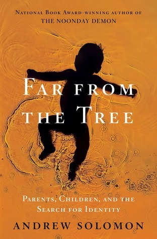

Far from the Tree
⭐️⭐️⭐️⭐️⭐️
Format: audio (40 hours 37 minutes)
- Previously: The Sunlit Man
- Next: The Gifts of Imperfection
This book was really interesting. And heavy. And long (at 962 pages, or 40+ hours for the audiobook). The author, Andrew Solomon, researched families with children who are disimilar from their parents in a variety of ways. In this way, the apple fell "far from the tree". He reviewed how that characteristic can either be a wedge, or a unifier - and the various places in between. This applied to everybody in the family - the child, the parents, and anybody else. The number of families and people he interviewed felt staggering and comprehensive.
Each chapter felt like a book on its own topic. The topics he discussed were "deafness, dwarfism, Down's syndrome, autism, schizophrenia, or multiple severe disabilities; with children who are prodigies, who are conceived in rape, who become criminals, who are transgender." Each of those was a chapter on its own.
Naturally, I went into each chapter with my own preconceived notions. By the end of each, I felt much more informed, open-minded, empathetic, and compassionate towards those coping with what the chapter discussed. Anybody who signs up to be a parent has something in mind for the adventure, and as each of us come to learn, that rarely (if ever) pans out exactly how we had in mind. Whether your family is coping with one of these things or not (or something that wasn't discussed by Solomon), I can't see anybody reading this book, and not walking away with a bit more compassion for others, and maybe a bit encouraged on your adventure.